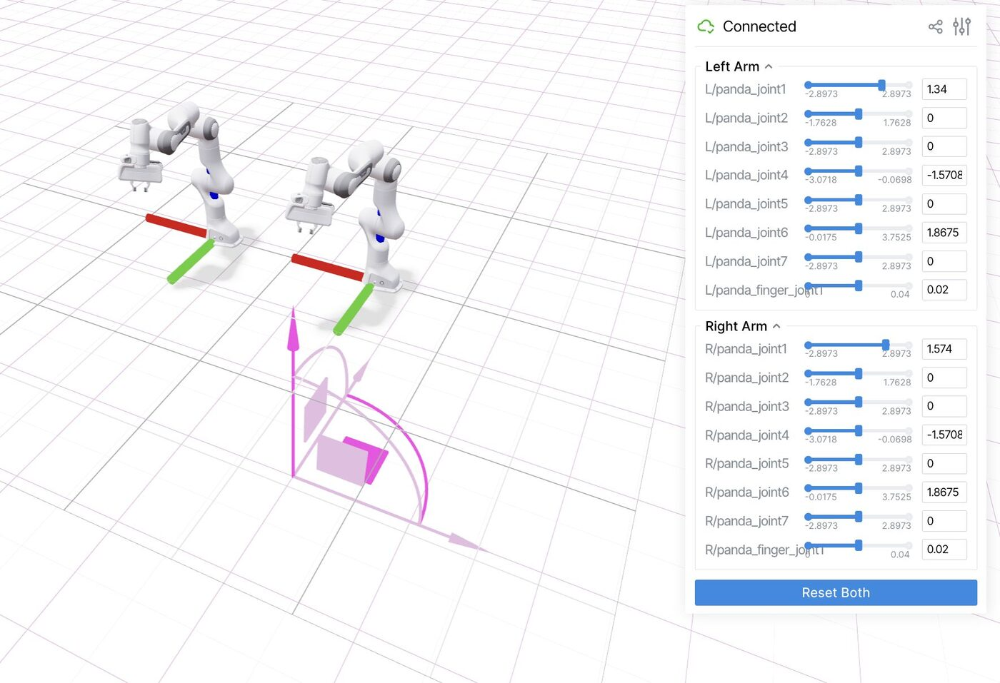

Real-to-Sim with Gaussian Splats & Viser

Overview
My first weeks in the lab, getting up to speed on the simulation and 3D-reconstruction tools the rest of my projects build on: capturing real objects as Gaussian splats, visualizing robots and scenes in Viser, and simulating cloth in Newton.
iPhone video → Gaussian splat → Viser
A pipeline to capture a real object with a phone and view it in 3D: extract frames and run COLMAP
(ns-process-data), train a splat with Nerfstudio's splatfacto (up to an hour),
export it, and load it into a Viser viewer.
- Choosing the right object: an AirPods case on a white table only matched 2 of 317 frames (0.63%) in COLMAP. A plant, with much more texture, matched 331 of 331.
- No sudo on the server: installed COLMAP through Miniconda in my home folder.
- Wrong pip: conda's pip was shadowing the venv's, breaking the gsplat build; fixed by calling the venv's Python directly.
- Blank viewer: plain SSH port forwarding kept dropping the WebSocket; VS Code Remote SSH port forwarding fixed it.
- Shared live views through Viser's share link or ngrok.
What is a Gaussian splat?
Like a NeRF, it's a radiance-field representation of a scene, but instead of a neural network it uses many soft 3D ellipsoids, each with a position, size, orientation, color and transparency. Training starts from a structure-from-motion point cloud and optimizes the Gaussians by projecting them onto 2D images and comparing with the real photos, the reverse direction from a NeRF.
Robots and cloth in simulation
- Bimanual xArm7 in Viser: adapted Viser's URDF visualizer to show two arms with per-joint sliders.
- Cloth fling in Newton: the cloth didn't gain enough momentum to fling forward until I shortened the action period significantly. That huge acceleration then left the corners racing ahead of the rest of the cloth, which I fixed by increasing tension between nodes and switching from Blender to Viser for a better cloth rendering.
